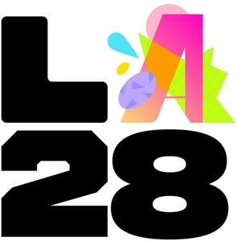

Trade Mark Journal No.2026/012 20 March 2026
WO0000001905910 (3,5,9,12,14,16,18,21,24,25,28,29,32,35,36,41,42,43)
Office of origin: Switzerland
Date of International Registration:11 November 2025
Date of designation in the UK:
11 November 2025

The mark contains the colours black, pink, green, blue, yellow, mauve and orange
International priority date claimed: 14 May 2025
(Switzerland)
(832370)
- Class 3
- Non-medicated cosmetics and toiletry preparations; perfumery products, essential oils; bleaching preparations and other laundry preparations; toilet preparations, including oral hygiene preparations; body-cleansing and beauty-care preparations, including make-up; body-cleansing and beauty-care preparations, including soaps and gels; body-cleansing and beauty-care preparations, including bath cosmetics; body-cleansing and beauty-care preparations, including deodorants and antiperspirants; skin, eye and nail care products; hair preparations and treatments; shaving and depilatory preparations; essential oils and plant extracts for cosmetic use; cleaning preparations; perfumes; preparations for cleaning and polishing leather and footwear.
- Class 5
- Pharmaceutical products, medical and veterinary preparations; Hygienic products for medicine; foodstuffs and dietetic substances for medical or veterinary use, baby food; food supplements for human beings and animals; plasters, material for dressings; disinfectants; diagnostic pharmaceuticals; pharmaceutical and veterinary substances for medical use; disposable diapers, diapers and diaper covers made of paper or cellulose.
- Class 9
- Apparatus and instruments for recording, transmitting, reproducing or processing sound, images or data; Recorded or downloadable media; blank digital or analogue recording and storage media; downloadable multimedia contents; software including games software, application software including communication, networking and social networking software; data and file management and database software; media software and publishing software; office and business applications; artificial intelligence and machine learning software; software for monitoring, analyzing, controlling and running physical world operations; system software and system support software; virtual and augmented reality software; web application and server software, including e-commerce and e-payment software; computer networking and data communications equipment; computers and computer hardware; personal digital assistants [PDAs]; audio/visual and photographic devices including audio devices and radio receivers; optical devices, enhancers and correctors, including optical enhancers, lasers, glasses, sunglasses and contact lenses; safety, security, protection and signalling devices, including alarms and warning equipment, access control devices, signalling apparatus; clothing for protection against accidents; fire protection clothing; protective goggles; diving equipment, including diving helmets, diving weight belts, diving suits, diving gloves, diving goggles, diving masks, diving earplugs, diving snorkels; measuring, detecting, monitoring and controlling devices, including testing and quality control devices; measuring devices including time measuring instruments (not including clocks and watches); weight measuring instruments; distance and dimension measuring instruments; speed measuring instruments; temperature measuring instruments; downloadable audio and video recordings containing sports highlights authenticated by non-fungible tokens (NFTs); downloadable multimedia file containing text, audio and video of sports events authenticated by non-fungible tokens (NFTs); encoded registration tokens authenticating virtual products, including clothing, footwear, hats and caps, leather goods, bags, sports bags, backpacks, cases, umbrellas, badges, wallets, jewellery, medals, games, toys, soft toys, sports goods, sports clothing, sports footwear, balls and other articles and equipment for sport, protective equipment for sport, vehicles, cars, bicycles, scooters, golf carts, aeroplanes, boats, barges, fireworks, weapons, musical instruments, sunglasses, eyewear, table and bed linen, cosmetics, perfumery, dietary supplements, horological and chronometric instruments, watches, posters, stationery, printed matter, building materials, transportable and non transportable constructions, tyres, wheel rims, vehicle accessories, helmets, headphones, telephones, mobile phone covers, Christmas tree decorations, household and kitchen utensils and containers, glassware, porcelain ware, figurines, works of art, statuettes, ready-to-eat meals, foodstuffs, drinks, collectables, all intended for use in online games and virtual online environments; computer programs and downloadable software that can virtually represent clothing, footwear, hats and caps, leather goods, bags, sports bags, backpacks, cases, umbrellas, badges, wallets, jewellery, medals, games, toys, soft toys, sports goods, sports clothing, sports footwear, balls and other articles and equipment for sport, protective equipment for sport, vehicles, cars, bicycles, scooters, golf carts, aeroplanes, boats, barges, fireworks, weapons, musical instruments, sunglasses, eyewear, table and bed linen, cosmetics, perfumery, dietary supplements, horological and chronometric instruments, watches, posters, stationery, printed matter, building materials, transportable and non-transportable constructions, tyres, wheel rims, vehicle accessories, helmets, headphones, telephones, mobile phone covers, Christmas tree decorations, household and kitchen utensils and containers, glassware, porcelain ware, figurines, works of art, statuettes, ready-to-eat meals, foodstuffs, drinks, collectables, all intended for use in online games and in online virtual environments; downloadable computer applications available online from virtual worlds; downloadable digital files authenticated by non-fungible tokens (NFTs) enabling authenticity, ownership, availability and trading of digital creative assets on software platforms; downloadable computer software for managing digital collectibles using blockchain and distributed ledger technology; downloadable digital files authenticated by non-fungible tokens (NFTs) used with private or public blockchain technology or distributed ledger technology; downloadable computer programs that can virtually represent downloadable virtual goods and accessories for use online and in online virtual worlds; downloadable computer software used for electronic commerce, storing, sending, receiving, accepting and transmitting digital currencies and managing digital currency payments and foreign exchange transactions; downloadable digital files authenticated by non-fungible tokens (NFTs) used with blockchain technology; downloadable image files containing trading cards authenticated by non-fungible tokens (NFTs); downloadable image files containing illustrations authenticated by non-fungible tokens (NFTs); downloadable multimedia file containing text, audio and video authenticated by non-fungible tokens (NFTs); downloadable digital files authenticated by non-fungible tokens (NFTs) used offline and/or in online virtual worlds; downloadable digital files authenticated by non-fungible tokens (NFTs) or software that can virtually represent goods; software that can virtually represent clothing, footwear, hats and caps, leather goods, bags, sports bags, backpacks, cases, umbrellas, badges, wallets, jewellery, medals, games, toys, soft toys, sports goods, sports clothing, sports footwear, balls and other articles and equipment for sport, protective equipment for sport, vehicles, cars, bicycles, scooters, golf carts, aeroplanes, boats, barges, fireworks, weapons, musical instruments, sunglasses, eyewear, table and bed linen, cosmetics, perfumery, dietary supplements, horological and chronometric instruments, watches, posters, stationery, printed matter, building materials, transportable and non-transportable constructions, tyres, wheel rims, vehicle accessories, helmets, headphones, telephones, mobile phone covers, Christmas tree decorations, household and kitchen utensils and containers, glassware, porcelain ware, figurines, works of art, statuettes, ready-to-eat meals, foodstuffs, drinks, collectables incorporating short-range, high-frequency wireless communication technology (NFC); computer programs that can virtually represent clothing, footwear, hats and caps, leather goods, bags, sports bags, backpacks, cases, umbrellas, badges, wallets, jewellery, medals, games, toys, soft toys, sports goods, sports clothing, sports footwear, balls and other articles and equipment for sport, protective equipment for sport, vehicles, cars, bicycles, scooters, golf carts, aeroplanes, boats, barges, fireworks, weapons, musical instruments, sunglasses, eyewear, table and bed linen, cosmetics, perfumery, dietary supplements, horological and chronometric instruments, watches, posters, stationery, printed matter, building materials, transportable and non-transportable constructions, tyres, wheel rims, vehicle accessories, helmets, headphones, telephones, mobile phone covers, Christmas tree decorations, household and kitchen utensils and containers, glassware, porcelain ware, figurines, works of art, statuettes, ready-to-eat meals, foodstuffs, drinks, collectables and other non-fungible tokens intended for use online and in online virtual environments; downloadable virtual reality game software; downloadable electronic game software; electronic newsletters; downloadable digital files authenticated by non-fungible blockchain-based tokens; downloadable digital photographs; downloadable computer programs that can virtually represent clothing, footwear, hats and caps, leather goods, bags, sports bags, backpacks, cases, umbrellas, badges, wallets, jewellery, medals, games, toys, soft toys, sports goods, sports clothing, sports footwear, balls and other articles and equipment for sport, protective equipment for sport, vehicles, cars, bicycles, scooters, golf carts, aeroplanes, boats, barges, fireworks, weapons, musical instruments, sunglasses, eyewear, table and bed linen, cosmetics, perfumery, dietary supplements, horological and chronometric instruments, watches, posters, stationery, printed matter, building materials, transportable and non-transportable constructions, tyres, wheel rims, vehicle accessories, helmets, headphones, telephones, mobile phone covers, Christmas tree decorations, household and kitchen utensils and containers, glassware, porcelain ware, figurines, works of art, statuettes, ready-to-eat meals, foodstuffs, drinks, collectables, all intended for use online and in online virtual worlds; downloadable computer software for the creation, production and modification of digital animated and non-animated designs and characters, avatars, digital overlays and skins (skins or themes) for access and use in online environments, virtual online environments, and extended reality virtual environments; downloadable software for engaging in social networking and interacting with online communities; downloadable software for accessing and streaming multimedia sporting and entertainment content; downloadable software for providing access to an online virtual environment.
- Class 12
- Vehicles; Apparatus for locomotion by land, air or water; electric motors and diesel engines for land vehicles; automatic vehicles; electric vehicles; electric bicycles; tyres; wheels and rims for two-wheeled motor vehicles; bicycles; tyres for bicycles; inner tubes for bicycles; wheels and rims for bicycles; hubcaps; panniers adapted for bicycles; panniers adapted for motorcycles; canoe paddles; kayak paddles; boat oars; boats; canoes; sailboats; tug boats [vehicles]; pushchairs; golf carts.
- Class 14
- Precious metals and their alloys; Jewelry, precious and semi-precious stones; clocks and chronometric instruments; semi-precious stones; precious stones, pearls and precious metals; jewelry; time-measuring instruments; jewelry boxes and watch boxes; key rings and key chains and their charms; medallions; medals; commemorative medals; medals of precious metal; coins, commemorative coins, statues and figurines, made of or protected by precious or semi-precious metal or precious stones.
- Class 16
- Paper and paperboard; Photographs [printed]; stationery and office supplies (except furniture); adhesives for stationery or household purposes; drawing supplies and artists' materials; paint brushes; instructional materials except apparatus; art objects, paper and cardboard figurines, architectural models; articles and materials for artistic, craft and model-making activities for decoration and art, and their supports; stationery and school supplies, including writing and stamping implements, correcting and erasing implements; printed educational materials and printed educational aids; photo albums and scrapbooks for collectors; printing products including books; paper and paperboard, including paper and paperboard for industrial use.
- Class 18
- Leather and imitations of leather; Luggage and transport bags; umbrellas and parasols; purses (coin purses); wheeled shopping bags; vanity cases for toiletries; key cases; trunks; attaché cases; card cases [wallets]; wallets; backpacks; shopping bags; beach bags; handbags; traveling bags; sports bags; travel sets [leatherware]; suitcases; riding crops; saddle pads, covers and cloths for horse riding; briefcases of leather [leather goods].
- Class 21
- Household or kitchen utensils and containers; Cookware and tableware, except forks, knives and spoons; combs and sponges; brushes; articles for cleaning purposes, namely cloths for cleaning and cleaning tow; articles for cleaning, namely brooms, sponges and toilet and bathroom brushes; glassware, porcelain and earthenware; statues, figurines, plaques and works of art of porcelain, terracotta or glass; gardening gloves; dustbins for household use; clothing stretchers; brushes for footwear; shoe waxers, non-electric; candlesticks; piggy banks; bottle openers, electric and non-electric; tablemats, not of paper or textile.
- Class 24
- Textiles and substitutes for textiles; household linens; bed blankets; sheets; bed linen; table linen, not of paper; bath linen (except clothing); flags and pennants not of paper; pillow shams; protective furniture covers; handkerchiefs of textile; bath gloves; towels of textile; beach towels; wall hangings of textile, curtains; tea towels; cushion and pillow covers; tablecloths, not of paper; curtains of textile or plastic; shower curtains of textile or plastic; place mats of textile; textile labels; cloths for removing make-up.
- Class 25
- Clothing, footwear, headwear; Bandanas [neckerchiefs]; bodies [underclothing]; caps being headwear; belts [clothing]; pullovers; hats; socks; sports shoes; shirts; studs for football boots; suits; ties; sports singlets; gloves [clothing]; jerseys [clothing]; skirts; kimonos; leggings [trousers]; sports jerseys; bathing suits; coats; trousers; slippers; bathrobes; pyjamas; dresses; brassieres; tee-shirts; jackets; underwear; stockings; bathing caps; hoods [clothing]; waterproof clothing; athletic wear; sportswear.
- Class 28
- Games and toys; Video game apparatus; gymnastic and sports articles; gymnastic apparatus; sports articles and equipment; toys, games and playground equipment; board games and gambling machines; swimming armbands and swimming belts; flotation devices in the form of recreational swim boards; webbed swimming gloves, swimming vests, swim boards and swimming straps.
- Class 29
- Meat, fish, poultry and game; Meat extracts; tofu; charcuterie; preserved, frozen, dried and cooked fruits and vegetables; jellies, jams, compotes; eggs; milk, cheese, butter, yogurt and other milk products; edible oils and fats.
- Class 32
- Beers; Non-alcoholic beverages; mineral and aerated waters; fruit drinks and fruit juices; syrups and other non-alcoholic preparations for making beverages.
- Class 35
- Business management services; Business administration; office function services; advertising, marketing and promotional services; public relations services; product demonstration and product display services; organization of trade fairs and exhibitions; consultancy, advice and assistance with advertising, marketing and promotion; business assistance, management and administrative services; corporate accounting, book keeping and auditing services; business consultancy and advisory services; retail and wholesale services in relation to clothing, footwear, headgear, and fashion accessories; retail and wholesale services in relation to leather and leather imitation; retail and wholesale services in relation to luggage, bags, wallets and all-purpose bags, umbrellas and parasols, collars, leashes and animal clothing; retail and wholesale services in relation to preserved, frozen, dried and cooked fruit and vegetables, milk, cheese, butter, yoghurt and other dairy products; retail and wholesale services in relation to coffee, tea, cocoa and coffee substitutes, chocolate, ice cream, sherbet and other edible ice, ices for cooling [frozen water]; retail and wholesale services in relation to beer, non-alcoholic beverages, mineral and aerated waters, fruit juices [drinks], syrups and other non-alcoholic preparations for making beverages; retail and wholesale services in relation to industrial, scientific and photographic chemicals and agricultural, horticultural and forestry chemicals; retail and wholesale services in relation to raw synthetic resins, raw plastics, compost, manure, fertilisers, biological preparations for industry and science, synthetic resins, and chemical intermediates; retail and wholesale services in relation to chemicals, biochemicals and reagents used in industry, science and research; retail and wholesale services in relation to radiopharmaceuticals for scientific and research use; retail and wholesale services in relation to non-medicated cosmetics and toiletry preparations, perfumery products and essential oils; retail and wholesale services in relation to hair preparations and treatments, shaving and depilatory preparations, cleaning and perfuming preparations, including household perfumes; retail and wholesale services in relation to pharmaceuticals, medical and veterinary preparations; retail and wholesale services in relation to recorded and downloadable media; retail and wholesale services in relation to computer software; retail and wholesale services in relation to blank digital or analogue recording and storage media; retail and wholesale services in relation to computers and computer peripherals; retail and wholesale services in relation to digital or downloadable digital content, downloadable multimedia content; retail and wholesale services in relation to software, including games software; retail and wholesale services in relation to application software, including communication, networking and social networking software; retail and wholesale services in relation to [optical] eyeglasses, sunglasses; retail and wholesale services in relation to measuring devices, including time-measuring instruments (except clocks and watches); retail and wholesale services in relation to weight-measuring instruments; retail and wholesale services in relation to distance-measuring, dimension-measuring instruments; retail and wholesale services in relation to speed measuring instruments; retail and wholesale services in relation to mobility aids; retail and wholesale services in relation to orthopedic articles; retail and wholesale services in relation to suture materials; retail and wholesale services in relation to therapeutic and assistive devices adapted for disabled persons; retail and wholesale services in relation to hearing aids; retail and wholesale services in relation to vehicles, apparatus for locomotion by land, air or water; retail and wholesale services of electric motors and diesel engines for land vehicles; retail and wholesale services in relation to bicycles, bicycle tires and tubes; retail and wholesale services in relation to precious metals and their alloys; retail and wholesale services in relation to jewellery, precious and semi-precious stones; retail and wholesale services in relation to clocks and chronometric instruments; retail and wholesale services in relation to pearls and imitations thereof; retail and wholesale services in relation to statues and figurines made of or coated with metals or precious or semi-precious stones, or in imitation thereof; retail and wholesale services in relation to decorative articles made of, coated with or in imitation of metals or precious or semi-precious stones; retail and wholesale services in relation to key rings and key chains and their charms; retail and wholesale services in relation to medallions, medals; retail and wholesale services in relation to printing products; retail and wholesale services in relation to printed matter, including books; retail and wholesale services in relation to household utensils and containers; retail and wholesale services in relation to tableware, except forks, knives and spoons; retail and wholesale services in relation to glassware, porcelain and earthenware; retail and wholesale services in relation to cosmetic and toiletry utensils; retail and wholesale services in relation to games and toys; retail and wholesale services in relation to gymnastic and sporting goods; retail and wholesale services in relation to board games, video game apparatus, gaming machines and portable gaming devices; retail store services featuring computer software capable of virtually reproducing clothing, footwear, hats and caps, leather goods, bags, sports bags, backpacks, cases, umbrellas, badges, wallets, jewellery, medals, games, toys, soft toys, sports goods, sports clothing, sports footwear, balls and other articles and equipment for sport, protective equipment for sport, vehicles, cars, bicycles, scooters, golf carts, aeroplanes, boats, barges, fireworks, weapons, musical instruments, sunglasses, eyewear, table and bed linen, cosmetics, perfumery, dietary supplements, horological and chronometric instruments, watches, posters, stationery, printed matter, building materials, transportable and non-transportable constructions, tyres, wheel rims, vehicle accessories, helmets, headphones, telephones, mobile phone covers, Christmas tree decorations, household and kitchen utensils and containers, glassware, porcelain ware, figurines, works of art, statuettes, ready-to-eat meals, foodstuffs, drinks, collectables, all intended for use in online games and in online virtual environments or in virtual environments; operating online marketplaces relating to the purchase and sales of non-fungible tokens (NFTs) and other blockchain-based non-fungible valuables; live shopping services via the Internet using metaverse (online shopping using virtual reality or augmented reality technology) in relation to clothing, footwear, hats and caps, leather goods, bags, sports bags, backpacks, cases, umbrellas, badges, wallets, jewellery, medals, games, toys, soft toys, sports goods, sports clothing, sports footwear, balls and other articles and equipment for sport, protective equipment for sport, vehicles, cars, bicycles, scooters, golf carts, aeroplanes, boats, barges, fireworks, weapons, musical instruments, sunglasses, eyewear, table and bed linen, cosmetics, perfumery, dietary supplements, horological and chronometric instruments, watches, posters, stationery, printed matter, building materials, transportable and non-transportable constructions, tyres, wheel rims, vehicle accessories, helmets, headphones, telephones, mobile phone covers, Christmas tree decorations, household and kitchen utensils and containers, glassware, porcelain ware, figurines, works of art, statuettes, ready-to-eat meals, foodstuffs, drinks, collectables, all intended for use in online games and in online virtual environments or in virtual environment; providing an online marketplace for the sale and exchange of downloadable digital files containing data relating to virtual goods; providing an online marketplace for the display, sale and transfer of downloadable digital files authenticated by non-fungible tokens; providing an online marketplace for buyers and sellers of downloadable digital files authenticated by non-fungible tokens; organization of online virtual trade shows; advertising promotion of virtual goods, digital collectibles and downloadable digital files authenticated by non-fungible tokens [NFTs]; software auction services capable of virtually reproducing goods, collectibles and downloadable digital files authenticated by non-fungible tokens [NFTs]; organization and conduct of events for commercial, promotional or advertising purposes in relation to virtual goods, digital collectibles and downloadable digital files authenticated by non-fungible tokens [NFTs]; commercial management of digital assets; downloadable digital file auction services authenticated by non-fungible tokens.
- Class 36
- Insurance services; Financial affairs; banking affairs; monetary affairs; real estate affairs; fundraising; financial sponsorship; financial sponsorship of sporting activities; financial sponsoring of festivals and concerts; financing of sporting activities; financing of cultural activities; payment card services; financial services in connection with credit cards; financial consultancy; lease-purchase financing; debit card services; electronic transactions by credit and debit card; smart card and electronic money services; electronic transfer of capital; automated teller machine services; payment processing services; transaction authentication and verification services; provision of financial information via a global computer network; virtual currency exchange operation services; electronic transfer of virtual currencies; financial exchange of virtual currency; financial and monetary services related to virtual goods, digital collectibles and non-fungible tokens; fundraising and financial sponsorship related to virtual goods, digital collectibles and non-fungible tokens; online currency exchange; electronic transfer of funds; online banking services; financial and monetary transaction services relating to virtual goods, digital collectibles and non-fungible tokens; financial exchange of cryptographic assets; electronic transfer of crypto-assets; electronic transfer of funds via blockchain technology; electronic transfer of crypto-assets using blockchain technology.
- Class 41
- Teaching; Training; entertainment services; sporting and cultural activities; publishing, editing and writing of texts; online publishing of books and electronic trade journals; provision of non-downloadable online electronic publications; organization of conferences, exhibitions and competitions; organization of virtual sports competitions; organization of concerts; radio entertainment; television entertainment; betting and gaming services relating to sports; rental of gaming machines; organization of lotteries; on-line betting services; audio, video and multimedia program production; photography services; production of films other than advertising films; production of radio and television programmes; production of shows; sports and fitness services; sports clubs [fitness and health]; coaching [training]; rental services relating to equipment and facilities for education, entertainment, sports and culture; library services; rental of humanoid robots having communication and learning functions for entertaining people; rental of sports equipment and facilities; rental of audio/visual and photographic equipment and facilities; translation; interpretation; information on sports and cultural events, provided online from a computer database or the Internet or from other media; ticket reservation and pre-booking services for education, entertainment and sports activities and events; conducting guided tours; tourist information services related to planned sports, cultural, and recreational activities; music composition services; sports camp services; museum services [presentation, exhibitions]; amusement park services; education and training services relating to environmental protection; provision of digital music from the Internet; provision of sports results; organization of award ceremonies for outstanding acts or performances; organization and conduct of ceremonies in connection with the presentation of prizes and awards; entertainment services through non-downloadable computer software that virtually reproduce clothing, footwear, hats and caps, leather goods, bags, sports bags, backpacks, cases, umbrellas, badges, wallets, jewellery, medals, games, toys, soft toys, sports goods, sports clothing, sports footwear, balls and other articles and equipment for sport, protective equipment for sport, vehicles, cars, bicycles, scooters, golf carts, aeroplanes, boats, barges, fireworks, weapons, musical instruments, sunglasses, eyewear, table and bed linen, cosmetics, perfumery, dietary supplements, horological and chronometric instruments, watches, posters, stationery, printed matter, building materials, transportable and non-transportable constructions, tyres, wheel rims, vehicle accessories, helmets, headphones, telephones, mobile phone covers, Christmas tree decorations, household and kitchen utensils and containers, glassware, porcelain ware, figurines, works of art, statuettes, ready-to-eat meals, foodstuffs, drinks, collectables, all intended for use in online games and in online virtual environments or in virtual environments; entertainment services provided in the metaverse, namely the provision of downloadable virtual goods in the form of digital animated and non-animated designs and characters, avatars, digital overlays, and skins (skins or themes) for use in online virtual environments; organization of sports events and organization of competition within virtual computer universes; organization of competitions relating to education or entertainment provided online and/or within virtual computer worlds (metaverses); entertainment services provided in virtual environments in which users can interact for sporting, recreational, leisure or entertainment purposes; entertainment services provided in an online environment featuring streaming of sports and entertainment content and live streaming of sporting and entertainment events; entertainment services in the nature of organizing, arranging, and hosting virtual performances and sporting and entertainment events; virtual reality game services provided online from a computer network; provision of games over the Internet; simulated physical training services in virtual environments for entertainment purposes; virtual reality arcade game services; provision of online entertainment in the form of virtual sports competitions; organization of sports championships for games consisting of virtual sports teams with existing players (so-called fantasy sports); seat reservations for virtual or online shows and sports events; virtual seat reservations for shows and sports events broadcast online.
- Class 42
- Scientific and technological services; scientific research services; design services; industrial analysis and research services; carrying out laboratory analyses; design and development of computers; industrial design services; software design and development; information technology consultancy services; maintenance and updating of computer software for others; software installation; design and analysis of computer systems for others; consultancy services relating to chemical research; consultancy services in connection with the discovery and evaluation of medicines and components with diagnostic, prophylactic and/or therapeutic properties; technological consultancy; computer programming; development of computer programs for securing data transfers; technical consultancy in the field of information technology; development of computerized databases; hosting of computer sites [websites]; maintenance of software; provision of Internet search engines; research and development of new products (for others); updating of computer software; IT services for the recovery of data, images, documents, emails, messages, and audio and video data via the internet, intranets, extranets, and television; industrial research, development and testing in the field of sport; scientific research in the field of sports; hosting weblogs; hosting and providing electronic platforms for sharing and transmitting data; providing interactive computer applications enabling users to evaluate the performance of an athlete and to vote for an athlete; hosting and providing an Internet platform enabling users to identify and vote for athletes participating in an international athletic competition; hosting and providing an Internet platform enabling users to monitor the performance of these athletes; development and maintenance of computer database software; architectural design for urban development; design of sports facilities; design and development of virtual reality software; design of games; technical data analysis services in the field of sport; technical data analysis services in the field of human body performance and sport; technical control of sports materials, equipment and devices to detect the use of prohibited performance-enhancing materials, devices and equipment at a sports event; research in the field of environmental protection; providing technological information on ecological and environmentally-friendly innovations; design and analysis of software for others; provision, via an Internet platform, of interactive computer applications enabling users to rate (personal evaluation) an athlete's performance, to vote for an athlete, as well as to enter their comments, and also enabling them to consult the ratings, votes and comments of other users; hosting and providing an Internet platform enabling users to identify and vote for athletes participating in an international athletic competition, as well as monitor the performance of these athletes; consulting services regarding development of computer programs to simulate experiments or series of experiments in a virtual world; design and development of software for the online broadcasting of shows and sports competitions; user authentication services using blockchain technology; Platforms as a Service (PaaS) providing computer software platforms for the creation, promotion, sale and exchange of non-fungible tokens; provision of software (Software as a service, SaaS), namely software for use in connection with virtual goods such as clothing, shoes, hats and caps, leather goods, bags, cases, jewelry items, games, toys, stuffed animals, sporting goods, sports clothing, sports shoes, balls and other sports articles and equipment, protective equipment for sports, vehicles, in particular bicycles, scooters, golf carts, aircraft, boats, barges, fireworks, weapons, musical instruments, spectacles and eyewear, table and bed linen, cosmetics, posters, stationery and writing items, printed matter, building materials, transportable or non-transportable constructions, tires, rims and decorative elements of vehicles, helmets, earphones, telephones, shells of mobile telephones, decorations for Christmas trees, figurines, works of art, statuettes, cooked dishes and other food products, the aforementioned virtual products intended for use in the context of online games and in virtual environments, computer applications or even online in the context of virtual worlds.
- Class 43
- Restaurant services (food); Temporary accommodation; cafeteria and restaurant services; reception and hospitality services, i.e. provision of food and beverages; catering services; reservation of hotels and temporary accommodation; bar services; café services; rental of meeting rooms; vacation homes; services related to the provision of information in the field of tourism, i.e. provision of information on accommodation; services related to the provision of accommodation for the assistance of tourists; services related to the provision of food and meals for the assistance of tourists; rental of mobile and modular buildings.
Comité International Olympique
Representative: Bird & Bird LLP, Marienstrasse 15, 60329 Frankfurt am Main, GERMANY